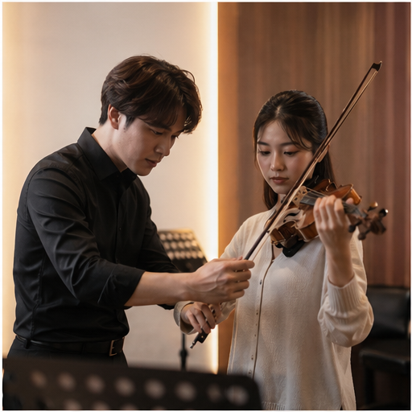
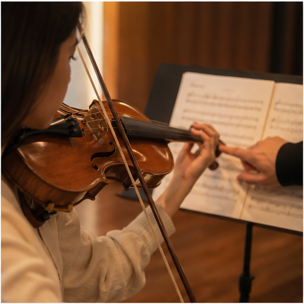
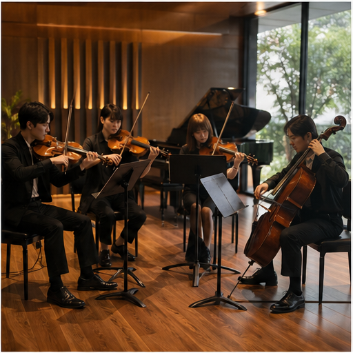
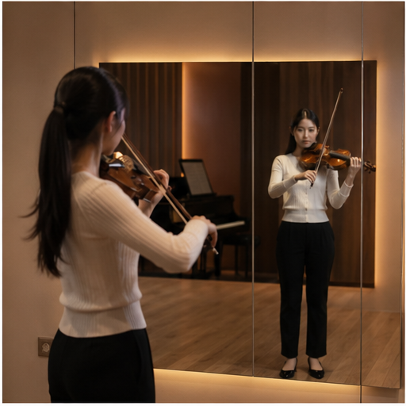
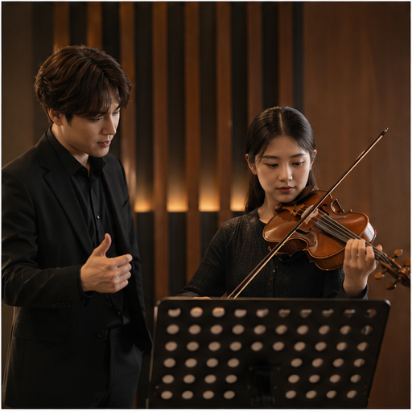
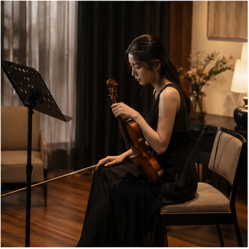

การแสดงไวโอลิน
น้ำเสียง วลีดนตรี และความมั่นใจบนเวที
ใช้วิดีโอการแสดงเดี่ยวเพื่อแสดงคุณภาพเสียง รสนิยมทางดนตรี และความเป็นมืออาชีพ
คอร์สส่วนตัว | คลาสสตูดิโอ | คอร์สออนไลน์ในอนาคต
เรียนไวโอลินแบบตัวต่อตัวในบรรยากาศพรีเมียม สำหรับนักเรียนที่ต้องการเทคนิคที่มั่นคง ความมั่นใจบนเวที วินัยในการซ้อม และเสียงที่ถ่ายทอดอารมณ์ได้ลึกขึ้น
ออกแบบเพื่อการเติบโตจริง
คอร์สส่วนตัวคือคอร์สหลักของโรงเรียน พานักเรียนตั้งแต่พื้นฐานเทคนิคไปจนถึงการเล่นอย่างมีอารมณ์ พร้อมคำแนะนำจากครู การเตรียมตัวขึ้นเวที และแนวทางซ้อมรายสัปดาห์
เริ่มสมัครเรียนโปรไฟล์ผู้สอน
พื้นที่นี้ใช้เล่าเรื่องของคุณ: ประวัติการเรียน ประสบการณ์คอนเสิร์ต วงออร์เคสตรา ผลงานของนักเรียน และเหตุผลที่คุณรักการสอน โทนควรรู้สึกเป็นกันเอง มั่นใจ และพรีเมียม
ประสบการณ์
การแสดงไวโอลิน
ใช้วิดีโอการแสดงเดี่ยวเพื่อแสดงคุณภาพเสียง รสนิยมทางดนตรี และความเป็นมืออาชีพ
วง Ensemble & Orchestra
ใส่วิดีโอการเล่นกลุ่ม วงออร์เคสตรา หรือคลิปซ้อมเพื่อสร้างความน่าเชื่อถือ
การสอนและแรงบันดาลใจ
แสดงสไตล์การสอน วิธีแก้ปัญหา และการให้กำลังใจระหว่างเรียน
บรรยากาศการเรียน






คอร์สเรียน
คอร์สหลักของโรงเรียน
คอร์สหลักสำหรับนักเรียนที่ต้องการคำแนะนำแบบตรงจุด แผนเรียนเฉพาะตัว และการติดตามพัฒนาการอย่างต่อเนื่องจากครู
เลือกวันที่และเวลาเรียนก่อนกรอกแบบฟอร์ม เพื่อให้ครูเห็นช่วงเวลาที่สนใจทันที
สมัครคอร์สส่วนตัวคอร์สสตูดิโอ
เต็มพื้นที่เรียนรู้แบบสตูดิโอสำหรับการแสดงกลุ่ม การฝึกฟัง นิสัยการเล่นร่วมกับผู้อื่น และการเตรียมการแสดง ตอนนี้ยังไม่เปิดรับสมัครเพิ่มเติม
เต็มตลอด / ยังไม่เปิดรับสมัครเรียนออนไลน์ตัวต่อตัว
เรียนสดกับครูแบบตัวต่อตัว เหมาะกับนักเรียนต่างจังหวัดหรือต่างประเทศ มีการแก้ท่าทาง คันชัก เสียง และแผนซ้อมแบบ real-time
สมัครเรียนออนไลน์ตัวต่อตัวกำลังพัฒนา
แนะนำให้ทำเป็นระบบนักเรียนแยก มีระบบเข้าสู่ระบบ บทเรียนเป็นตอน ไฟล์โน้ตประกอบ และระบบติดตามความก้าวหน้าของนักเรียน
ดูแผนคอร์สออนไลน์ขั้นตอนการสมัคร
แจ้งระดับปัจจุบัน เป้าหมาย และช่วงเวลาที่สะดวกเรียน
พูดคุยเรื่องระดับ รูปแบบการเรียน และความเหมาะสมของคอร์สส่วนตัว
เริ่มด้วยแผนเรียนที่ชัดเจนและเป้าหมายการซ้อมตั้งแต่คลาสแรก
ตารางเวลาครู
สีเขียวคือยังมีช่วงเวลาว่าง สีแดงคือเต็มหรือยังไม่เปิดรับในวันนั้น กดเลือกวันที่และช่วงเวลาเพื่อแนบไปกับใบสมัครได้เลย
ช่องทางการติดต่อ
แนะนำให้นักเรียนหรือผู้ปกครองส่งระดับปัจจุบัน เป้าหมาย และวิดีโอการเล่นสั้น ๆ เพื่อให้ครูประเมินแนวทางเรียนได้แม่นยำขึ้น
ช่องทางหลัก
เหมาะที่สุดสำหรับการส่งข้อมูลสมัครเรียน วิดีโอการเล่น และนัดเวลาปรึกษาคอร์สส่วนตัว
เปิด Facebook Pageสมัครเรียน
หลังเลือกวันที่และเวลาเรียนจากตารางแล้ว กรอกข้อมูลด้านขวาเพื่อส่งใบสมัครถึงครูโดยตรง ระบบจะแนบช่วงเวลาที่เลือกไปกับฟอร์มให้เรียบร้อย